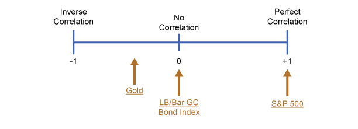

By definition, diversification is predicated on owning a basket of securities that will perform in somewhat dissimilar ways in any given market cycle, thereby mitigating market risk. Although obvious in concept, the question is how does one identify investments that in combination will produce a diversified portfolio?
The statistical measure that defines the degree to which any two investments will perform similarly is called correlation. Correlation is defined as the degree to which two asset classes or investments will have similar returns (or act the same) under a specific set of market or economic conditions. Stated differently, it is a measure of how the returns of two investments “co-relate” to each other. Investments producing similar results over a given timeframe have a high correlation while investments that produce dissimilar results have a low correlation. In diversifying an investment portfolio, the objective is to assemble assets and asset classes that are low in correlation to each other.
To have a deeper understanding of how investments or asset classes relate to each other, it is important to understand this principle of correlation. The diagram below shows how different indices correlate to the Dow Jones Industrial Average (DJIA) over the past 25 years (beginning in 1991).
Click the indices for an explanation of how they correlate to the Dow Jones Industrial Average.Correlation with DJIA
